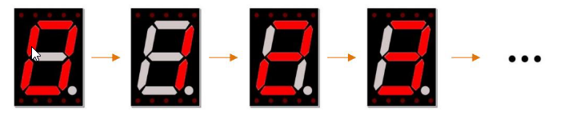

Chapter 15 74HC595 & 7-Segment Display
In this chapter, we will introduce the 7-Segment Display.
Project 15.1 7-Segment Display.
We will use 74HC595 to control 7-segment display and make it display hexadecimal character “0-F”.
Component List
Raspberry Pi Pico W x1
830 Tie-Points Breadboard x1
74HC595 x1
Resistor 220Ω x8
1 Dight 7-segment Display x1
Jumper Wire
Connect

Sketch
In this section, the 74HC595 is used in the same way as in the previous section, but with different values transferred. We can learn how to master the digital display by sending the coded value of “0” - “F”. Sketch_15.1_7_Segment_Display

Verify and upload the code, and you’ll see a 1-bit, 7-segment display displaying 0-f in a loop.
Code
The following is the program code:
int dataPin = 12; // Pin connected to DS of 74HC595（Pin14）
int latchPin = 13; // Pin connected to ST_CP of 74HC595（Pin12）
int clockPin = 14; // Pin connected to SH_CP of 74HC595（Pin11）
// Define the encoding of characters 0-F for the common-anode 7-Segment Display
byte num[] = {
0x3f, 0x06, 0x5b, 0x4f, 0x66, 0x6d, 0x7d, 0x07, 0x7f, 0x6f, // 0-9
0x77, 0x7c, 0x39, 0x5e, 0x79, 0x71 // A-F
};
void setup() {
// set pins to output
pinMode(latchPin, OUTPUT);
pinMode(clockPin, OUTPUT);
pinMode(dataPin, OUTPUT);
}
void loop() {
// display 0-F on digital tube
for (int i = 0; i < 16; i++) {
writeData(num[i]);// Send data to 74HC595
delay(1000); // delay 1 second
writeData(0xff); // Clear the display content
}
}
void writeData(int value) {
// Make latchPin output low level
digitalWrite(latchPin, LOW);
// Send serial data to 74HC595
shiftOut(dataPin, clockPin, LSBFIRST, value);
// Make latchPin output high level, then 74HC595 will update the data to parallel output
digitalWrite(latchPin, HIGH);
}